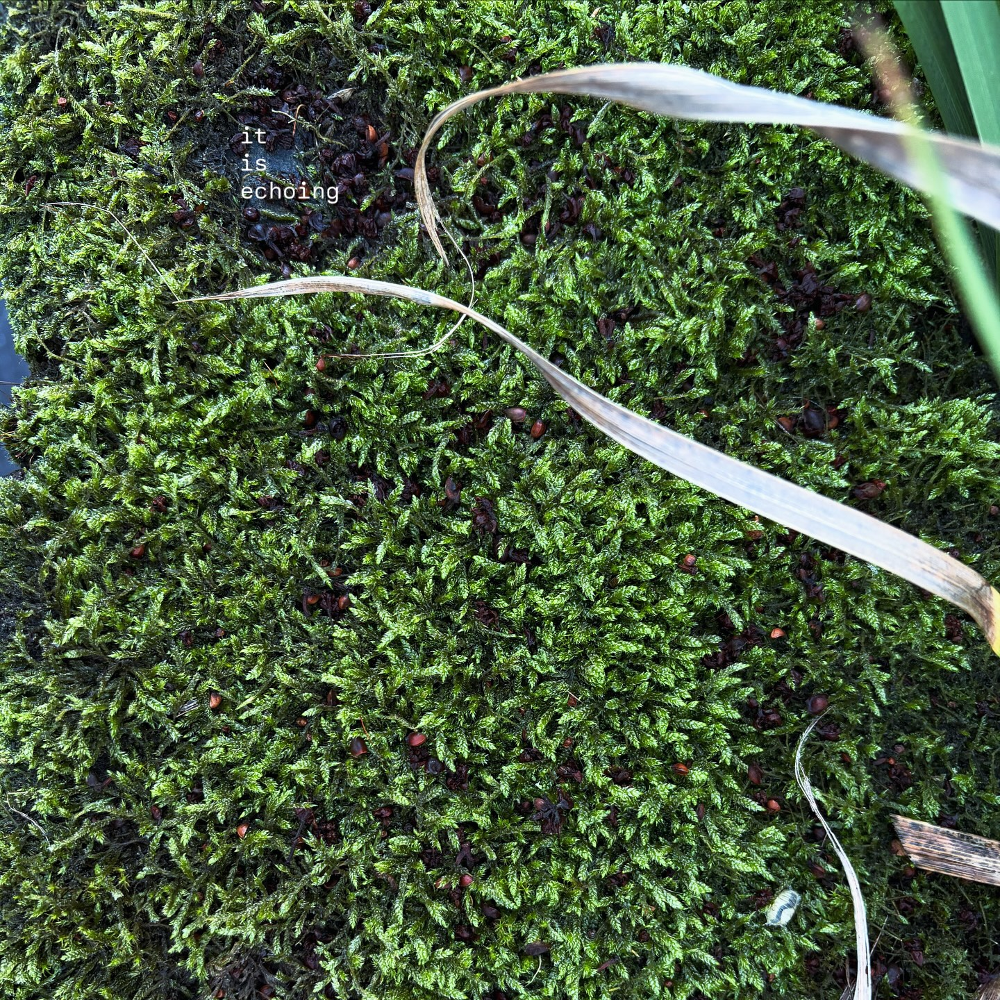
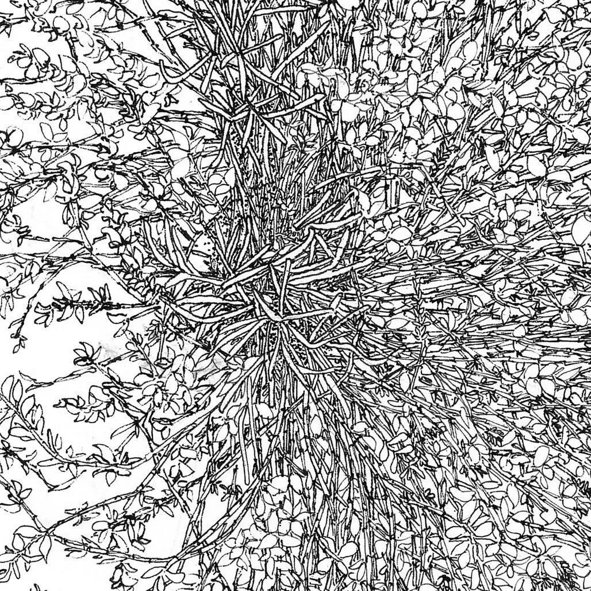
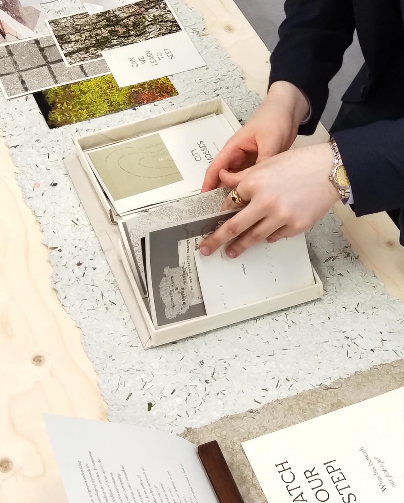
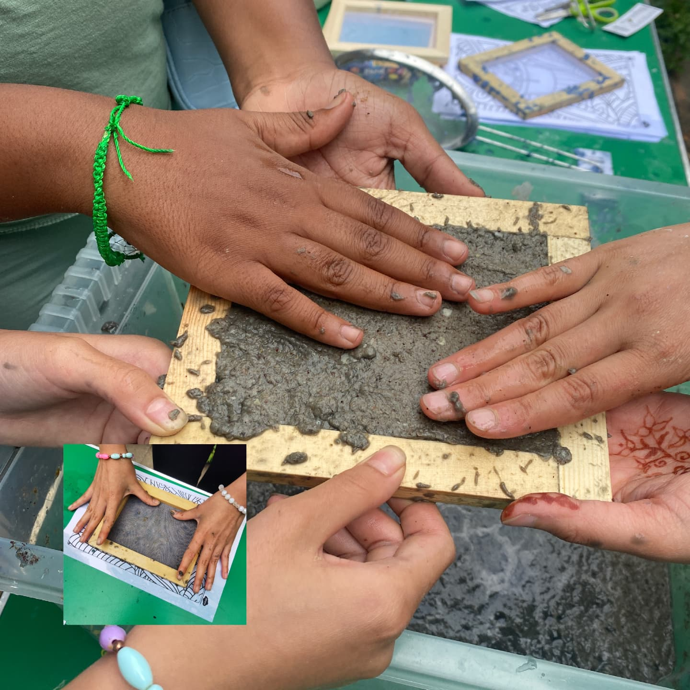

Welcome · walk slowly
Look down. Between two paving stones, a forest is getting on with its life.

Come closer
This is not a photograph
It is ink. Every leaf is one stroke of a pen
This is how closely she looks
Pl. 01
Moss, pavement crack
Ink on paper
2024
Shubhangi Saxena · nature artist · fine ink drawings
She draws the small lives a city walks over.
Shubhangi Saxena is an Indian nature artist who walks slowly. Where a pavement has split and moss has moved in, she stops, bends down and stays. Then she draws what she met, one hair-thin line at a time.
The drawings are small, and they take a long while. Up close they open the way moss does, into far more than you thought a crack could hold.
Shilp Kalaa is her studio, and this is where the drawings live. Stay as long as you like. Nothing here is in a hurry.
How a drawing begins
First the walk. Then the stopping.
-
i

The walk
She goes out with nowhere to be. Bark, kerb, the foot of a wall. A city is full of places nobody is looking at.
-
ii

The pause
A seam in the paving has turned green. She stops for it. Most feet have already gone by.
-
iii

The staying
She bends down and stays. After a while the green comes apart into thousands of small lives, each one holding its drop of rain.
-
iv

The line
Only then, the pen. One stroke for each leaf she met, for as long as it takes, until the page is as crowded and as quiet as the moss.
A few to begin with
2019 – 2025 · 17 plates in allOpen one and go in. The closer you come, the more there is.


Moss asks for almost nothing.
A crack, a little rain, to be left alone.
Seen on a walk · the pavement had split, and something green had moved in
Why she draws them
Her care for the living world is not loud. It looks like this: an hour beside a kerb, a page filled one line at a time, and the hope that the next time a path splits open at your feet, you might stop as well.
Beyond the page
Sometimes the drawings leave the wall.

Six months beside one boundary wall. Shown in London in 2025.

A book and a box. An ask of the city mosses.

Drawings laid low among timber and living moss. You kneel to see them.

Pulp, petals, and many hands in the same cold water.

The artist
She is in love with the smallest things.
Shubhangi is calm, unhurried, and usually looking at the ground. She keeps what the walks give her: a seed pod, a curled leaf, a stone. They sit beside the drawings and keep them company.
Write to her
Is there a wall, a path, a patch of nobody's land you would like someone to listen to?
Shubhangi takes on commissions, and she is glad to hear from curators, galleries and anyone who would like to make something together.